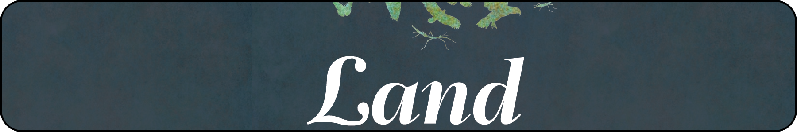

<details style=" border: 1px solid #d0d7de; border-radius: 14px; padding: 0.9rem 1.1rem; margin: 1.2rem 0; background: linear-gradient(to bottom, #ffffff, #f8fafc); box-shadow: 0 3px 10px rgba(0,0,0,0.05); "> <summary style=" cursor: pointer; font-weight: 700; font-size: 1.08rem; color: #1f2937; outline: none; "> How we mitigate hill-country erosion </summary> <style> .responsive-flex { display: flex; flex-direction: row; align-items: center; } .responsive-flex-item-text { flex: 1; padding-left: 20px; } @media (max-width: 900px) { .responsive-flex { flex-direction: column; } .responsive-flex-item-text { padding-left: 0 !important; padding-top: 20px; } } </style> <div class="responsive-flex"> <div style="flex: 1;"> <img src="../../../assets/land/tree_important.png" style="max-width: 100%; height: auto; border-radius: 10px;" /> </div> <div class="responsive-flex-item-text"> <br> Under Horizons’ Sustainable Land Use Initiative (SLUI) - New Zealand’s largest hill country erosion control programme - and other work programmes, our Land and Freshwater teams work with landowners to keep soil on the hills and out of the region’s waterways. These activities aim to reduce erosion rates, create a more resilient rural sector, improve water quality, and mitigate the impacts of upstream erosion on lowland communities. Our teams work with farmers and lifestyle block owners to implement erosion control works on their properties, including: <ul> <li>Afforestation: Planting native or exotic tree species on marginal (not productive) land for full canopy cover. </li> <li>Retirement: Native regeneration and retirement from grazing. This can also include retiring riparian margins and wetland areas. </li> <li>On-farm soil conservation: Planting poplar or willow trees at different intervals on erosion-prone pastureland. </li> </ul> </div> </div> </details>
Learn more about the land-use, geology and erosion mitigation works in your local Freshwater Management Unit (FMU). - **Select an FMU** on the map, or **enter an address** in the search bar - **Scroll down slightly** to see the erosion mitigation works completed in that FMU Key for map: Purple represents areas of that region that have been mapped and identified as erosion-prone and are considered a priority for erosion mitigation works.
Click an FMU on the map to see details of erosion mitigation works completed to date.